The README, Get started and the model
articles use a small set of terms: linear predictor, latent field,
hyperparameter, family, phi, inference mode, tier, outer
grid, debias, mixture read and the diagnostics door. This article
defines them in that order, each on a fit small enough to run in a
second, and each built on the one before. It ends with the fitted object
itself, the functions that read it, and three rules every fitting
function enforces. Installation is covered in Get
started.
The linear predictor and fixed effects
The data for the first sections are 300 Gaussian measurements on 12
groups. x is a measured covariate, g the
group, and y the response, simulated from an intercept of
0.5, a slope of 1.2, a group offset with standard deviation 0.6 and
residual noise with standard deviation 0.8.
n <- 300
x <- rnorm(n)
g <- factor(sample(1:12, n, replace = TRUE))
u <- rnorm(12, sd = 0.6)
d <- data.frame(y = 0.5 + 1.2 * x + u[g] + rnorm(n, sd = 0.8), x = x, g = g)The formula y ~ x gives each observation
a linear predictor
where
and
are the fixed effects: one coefficient per column of the design matrix,
shared by every observation. coef() returns their posterior
means.
Latent fields and their hyperparameters
The group offsets in d are not explained by
x. Adding (1 | g) gives the linear predictor
one extra term per group,
where
is the group of observation
and
the offset of group
.
The
are latent: they are never observed, and their prior ties them together
through the scale
.
A collection of latent values with a joint Gaussian prior is a latent
field. A random intercept is the simplest one; spatial fields
(spatial(), spatial_gp()), temporal fields
(temporal_rw1() and its siblings) and custom blocks
(tgmrf()) are others.
The parameters of the field’s prior, here
,
are its hyperparameters. The fit below conditions on
sigma_re = 0.6, so the hyperparameter is held at that value
and VarCorr() labels it conditioned.
fit1 <- tulpa(y ~ x + (1 | g), data = d, family = "gaussian",
mode = "laplace", sigma_re = 0.6, phi = 0.8^2)
VarCorr(fit1)
#> term coef sd source
#> 1 g (Intercept) 0.6 conditioned
#> 2 Residual <NA> 0.8 conditioned
head(ranef(fit1), 3)
#> term estimate sd conf.low conf.high source
#> 1 g[1] 0.2601989 0.2330870 -0.1966431 0.71704099 laplace
#> 2 g[2] -0.3545551 0.2232946 -0.7922044 0.08309428 laplace
#> 3 g[3] 0.1282152 0.2293624 -0.3213268 0.57775727 laplaceranef() returns each group’s
at the posterior mode, with the standard deviation and 95% interval of
the Laplace Gaussian; the source column records that read.
Later sections integrate a hyperparameter instead of fixing it.
Family, link and phi
The family is the distribution of
given
.
The link connects the two: the family’s mean is
,
with
the identity for gaussian, the log for poisson
and the logit for binomial and beta.
Coefficients are therefore on the link scale.
family_names() lists every family tulpa()
fits.
family_names()
#> [1] "binomial" "poisson"
#> [3] "neg_binomial_2" "neg_binomial_1"
#> [5] "truncated_poisson" "truncated_neg_binomial_2"
#> [7] "lognormal" "gaussian"
#> [9] "beta" "gamma"
#> [11] "inverse_gaussian" "beta_binomial"
#> [13] "tweedie" "t"phi is the family’s dispersion, one number whose meaning
depends on the family: the residual variance for gaussian,
the size for neg_binomial_2, the precision for
beta. binomial and poisson have
none. The fits above pass phi = 0.8^2, the variance the
data were simulated with. A Poisson fit of a count response takes no
phi, and its coefficients are log rates.
dp <- data.frame(y = rpois(n, exp(0.2 + 0.6 * x)), x = x)
coef(tulpa(y ~ x, data = dp, family = "poisson", mode = "laplace"))
#> (Intercept) x
#> 0.2493226 0.5326579Inference mode and tier
mode selects how the posterior is computed. Each mode
belongs to one of three tiers, and the tier states what the reported
intervals mean:
- Tier 1 (exact): the mode draws from the posterior, so its intervals
are posterior intervals up to Monte Carlo error.
"mala","hmc","imh_laplace"and"gibbs"are examples. - Tier 2 (structured): the mode is accurate when a stated assumption
holds, usually a Gaussian shape of some block of the posterior.
"laplace"and"nested_laplace"are examples. - Tier 3 (optimized): a point and a spread from an optimisation
objective, with no general guarantee on the spread.
"vi"is an example.
The fit records the backend that ran and its tier.
c(backend = fit1$backend, tier = fit1$inference_tier)
#> backend tier
#> "laplace" "2"inference_mode_info() prints the full list of modes with
their tiers.
Inner Laplace and outer hyperparameter integration
A temporal field shows what happens when a hyperparameter is
integrated. The data dt are 300 Poisson counts over 20 time
points, with a sinusoidal trend over time and a slope of 0.5 on
x.
Tt <- 20
time <- sample(seq_len(Tt), n, replace = TRUE)
trend <- sin(2 * pi * seq_len(Tt) / Tt)
dt <- data.frame(y = rpois(n, exp(0.3 + 0.5 * x + trend[time])),
x = x, time = time)temporal_rw1("time") puts a first-order random walk on
the 20 time points. Its hyperparameter is the precision
tau, which sets how far neighbouring time points may
differ. No value for tau is passed, so the fit integrates
over it.
fit_t <- tulpa(y ~ x, data = dt, family = "poisson",
temporal = temporal_rw1("time"),
control = list(n_threads = 2))
#> [nested-laplace] 1/9 cells (11%) | elapsed 0s | ETA >=0s | 0.00s/cells
#> [nested-laplace] 6/6 cells (100%) | elapsed 0s | ETA done | 0.00s/cells
fit_t
#> tulpa nested-Laplace fit
#> hyperparameters: tau (grid: 12 cells)
#> outer pareto-k: -1.44 (reliable)
#> fit in 0.4s (grid 0.0s)
#> Call: tulpa(formula = y ~ x, data = dt, family = "poisson", temporal = temporal_rw1("time"), control = list(n_threads = 2))
#> n_obs: 300
#>
#> Coefficients:
#> (Intercept) x
#> 0.2637 0.5215
#>
#> Use summary() for intervals, variance components, hyperparameters and reliability.The printed header names the method: nested Laplace over a grid of
cells for tau. The computation has two layers. For each
fixed value of tau, the inner Laplace approximation finds
the mode of the fixed effects and the field and the curvature there, and
with them an approximate log marginal likelihood of that
tau. The outer layer lays a grid of tau
values, the outer grid, whose points are its cells, and turns those log
marginal likelihoods (plus the hyperprior) into one weight per cell.
tulpa_outer_grid() returns the grid.
og <- tulpa_outer_grid(fit_t)
data.frame(tau = round(og$nodes[, 1], 2), weight = round(og$weights, 3))
#> tau weight
#> 1 0.30 0.000
#> 2 0.53 0.000
#> 3 0.95 0.000
#> 4 1.69 0.004
#> 5 3.00 0.050
#> 6 5.33 0.184
#> 7 9.49 0.226
#> 8 16.87 0.064
#> 9 30.00 0.002
#> 10 7.11 0.252
#> 11 12.65 0.127
#> 12 4.00 0.092The rows are in the order the cells were solved: the first nine are
the declared grid, and the cells after them are points a refinement pass
added between the heaviest ones. The cells at tau below 1
carry weights under 0.001. The posterior of any quantity is the weighted
mixture of the per-cell inner posteriors, so the fixed-effect interval
already contains the uncertainty in tau.
library(ggplot2)
ggplot(data.frame(tau = og$nodes[, 1], weight = og$weights),
aes(tau, weight)) +
geom_segment(aes(xend = tau, yend = 0), colour = "steelblue") +
geom_point() +
scale_x_log10() +
labs(x = "tau (log scale)", y = "cell weight") +
theme(panel.background = element_rect(fill = "transparent"),
plot.background = element_rect(fill = "transparent"))
Debias
A Tier 2 mode is exact only when its Gaussian assumption holds. A
debias step corrects the remaining error with exact sampling.
mode = "imh_laplace" is the simplest: it draws proposals
from the Laplace Gaussian and accepts or rejects them with a
Metropolis-Hastings step, so the accepted draws come from the exact
posterior. Its acceptance rate is a check on the Laplace fit: a rate
near 1 says the Gaussian was close to the posterior. The data
db reuse x and the groups as a binary
response.
db <- data.frame(y = rbinom(n, 1, plogis(-0.3 + x + u[g])), x = x, g = g)
fit_imh <- tulpa(y ~ x + (1 | g), data = db, family = "binomial",
mode = "imh_laplace", sigma_re = 0.6)
data.frame(tier = fit_imh$inference_tier,
accept = round(fit_imh$mean_accept, 2))
#> tier accept
#> 1 1 0.52The fit is Tier 1 and accepts about half of its proposals, above the 0.5 that Inference modes reads as a Laplace Gaussian close to the posterior.
Posterior draws and mixture reads
A sampler fit carries posterior draws.
posterior_sample() returns them as a matrix with one row
per draw and one column per sampled quantity, here the two fixed effects
and the 12 group offsets.
dr <- posterior_sample(fit_imh)
dim(dr)
#> [1] 1000 14A nested-Laplace fit carries no draws. Its summaries are read from
the weighted mixture of Gaussians on the outer grid:
summary() and confint() invert the mixture’s
distribution function, and the interval_source attribute
records that read.
ci <- confint(fit_t)
attr(ci, "interval_source")
#> [1] "skew_map_cell"
posterior_sample(fit_t)
#> posterior_sample(): the 'nested_laplace' fit carries no posterior draws. It carries the outer-grid Gaussian mixture over the fixed effects (`$grid_modes` / `$grid_hessians` / `$weights`); draw from it with tulpa_posterior_draws(fit).
#> NULLposterior_sample() returns NULL with a
message pointing to tulpa_posterior_draws(), which draws
independent samples from that mixture when draws are needed.
md <- tulpa_posterior_draws(fit_t)
dim(md)
#> [1] 1000 2The diagnostics door
diagnostics() is the one function that reports how far a
fit can be trusted, and what it reports follows the method. For a
sampler it is the per-parameter Rhat and effective sample sizes.
head(diagnostics(fit_imh), 3)
#> parameter rhat ess_bulk ess_tail
#> 1 (Intercept) 1.000504 351.9338 238.17123
#> 2 x 1.001796 195.7508 57.24726
#> 3 g[1] 1.000398 353.7611 155.29729For a nested-Laplace fit it is the reliability of the outer integration: the Pareto k of the grid, the grid’s effective sample size and notes on its resolution. Reliability diagnostics explains each line.
diagnostics(fit_t)
#> Nested-Laplace WHOLE-FIT reliability (i.i.d. draws)
#> two layers: the outer hyperparameter-grid integration, and the inner
#> Gaussian Laplace on the latent field
#> outer PSIS pareto_k = -1.441 (good); IS-ESS = 473.3
#> proposal: grid_mixture; as the backend placed it, 0.727 (unreliable)
#> outer grid quadrature ESS = 5.57 of 12 cells (max weight 0.252)
#> hyperparameter integration contributes 0.4-3.2% of the fixed-effect marginal variance
#> inner Laplace max |gamma_3| = 0.014 (good), scored 2/2 latents
#> inner Laplace importance pareto_k = 0.465 (good), min IS efficiency 0.9999, scored 2/2 latents
#> the importance weights are uniform on every probed index: the inner
#> Gaussian reproduces the conditional posterior over the sampled region,
#> so the shape above describes no correction and is not banded
#> whole-fit verdict: reliable (both layers good)
#> per-parameter columns: none.
#> the fit carries no posterior draws, so the per-parameter mean / sd / per-parameter columns are empty; tulpa_posterior_draws(fit) samples the retained outer-grid mixture if a sample is wantedA plain Laplace fit computes no reliability quantity, and
diagnostics() says so in a message and returns
NULL. mode = "imh_laplace", as in the Debias
section, is the check for that case.
The fitted object
Every fit is a list with class tulpa_fit; a
nested-Laplace fit adds tulpa_nested_laplace in front.
The fields an analysis reads are the method record and the fit status. Other fields hold the design, the response and the per-backend internals the accessors use.
fit1[c("backend", "inference_mode", "inference_tier",
"selection_reason", "converged", "log_marginal")]
#> $backend
#> [1] "laplace"
#>
#> $inference_mode
#> [1] "structured"
#>
#> $inference_tier
#> [1] 2
#>
#> $selection_reason
#> [1] "User-specified backend: laplace"
#>
#> $converged
#> [1] TRUE
#>
#> $log_marginal
#> [1] -374.0636print() shows the backend and tier on its first line and
the fixed effects below; summary() adds intervals, variance
components, hyperparameters and the reliability verdict.
fit1
#> tulpa fit (laplace, tier 2)
#> Call: tulpa(formula = y ~ x + (1 | g), data = d, family = "gaussian", mode = "laplace", sigma_re = 0.6, phi = 0.8^2)
#> n_obs: 300
#>
#> Coefficients:
#> (Intercept) x
#> 0.3335 1.2216
#>
#> Use summary() for intervals, variance components, hyperparameters and reliability.Accessors
Each accessor reads a stored field of the fit, so none of them refits
the model. The table lists the exported accessors for a
tulpa_fit.
| Accessor | Returns |
|---|---|
coef(), fixef()
|
posterior means of the fixed effects |
vcov() |
fixed-effect posterior covariance |
confint() |
credible intervals for the fixed effects |
summary() |
method record, fixed-effect table, variance components,
hyperparameters, reliability; coef(summary(fit)) is the
table |
ranef() |
per-group posterior of each random effect |
VarCorr() |
random-effect standard deviations, labelled
conditioned, estimated or
sampled
|
field_effects() |
the spatial field per unit |
temporal() |
the temporal field per time point |
tulpa_outer_grid() |
a nested-Laplace fit’s grid: nodes, weights, per-cell modes |
posterior_sample() |
posterior draws of a sampler fit as a matrix |
tulpa_draws_array() |
the same draws as an iterations x chains x parameters array |
tulpa_posterior_draws() |
independent draws from a nested-Laplace fit’s mixture |
diagnostics() |
the reliability report for the method that ran |
predict(), fitted()
|
predictions at new data, conditioned on fitted groups
(re_form = NA for the population level); in-sample
means |
logLik() |
log marginal likelihood (Laplace) or mean log density (sampler) |
tidy(), glance()
|
broom-style term table and one-row model summary |
plot() |
fixed-effect densities, or traces for a sampler fit |
Rules the fitting functions enforce
Statistical arguments and control knobs
The signature of tulpa() carries only statistical
arguments: the formula, the data, the family, mode,
phi, sigma_re, the priors and the latent
structure. Everything that changes how the computation runs (threads,
iterations, tolerances, grid settings) goes in one
control = list(). A knob given as a top-level argument
stops the fit and names the place it belongs.
tulpa(y ~ x, data = d, family = "gaussian", mode = "laplace",
phi = 0.8^2, n_threads = 2)
#> Error:
#> ! unknown argument(s) to tulpa(): n_threads. Tuning knobs go in `control = list()`.Misplaced knobs are errors
A knob the selected backend does not read is refused, with the list of the knobs it does read. A Laplace fit has no iterations to set.
tulpa(y ~ x, data = d, family = "gaussian", mode = "laplace",
phi = 0.8^2, control = list(n_iter = 2000))
#> Error:
#> ! Unknown control knob(s) for tulpa[mode = 'laplace'](): 'n_iter'.
#> Allowed: max_iter, n_threads, tol.The same call with a knob the Laplace backend reads runs.
Automatic mode stays in Tiers 1 and 2
mode = "auto", the default, picks a backend from the
model’s terms and records why in selection_reason. It
chooses only Tier 1 or Tier 2 backends. A Tier 3 backend runs only when
it is named.
fit_auto <- tulpa(y ~ x, data = db, family = "binomial")
fit_vi <- tulpa(y ~ x, data = db, family = "binomial", mode = "vi")
rbind(auto = c(fit_auto$backend, fit_auto$inference_tier,
fit_auto$selection_reason),
vi = c(fit_vi$backend, fit_vi$inference_tier,
fit_vi$selection_reason))
#> [,1] [,2] [,3]
#> auto "mala" "1" "default (MALA gradient sampler; mode = 'exact' selects NUTS)"
#> vi "vi" "3" "User-specified backend: vi"Where next
- Get started: one path from a formula to a fitted, compared and predicted model.
- Inference modes: the backends side by side on one model, with timings.
- Reliability diagnostics: what the outer Pareto k measures and how to act on it.
- Troubleshooting: the error and warning messages, each with its fix.